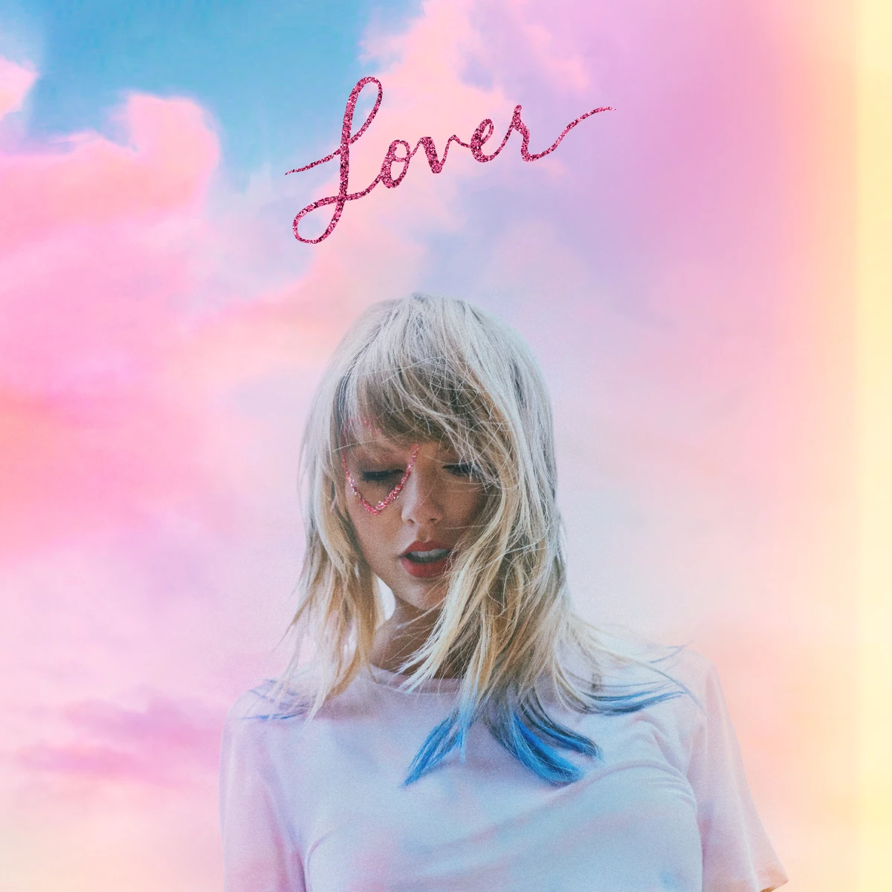

WHO IS
SHE?
Future Educator in Technical-Livelihood Education specializing in Home Economics, Culinary Arts, Garment Construction & Practical Life Skills.

KRISTINE FAYE CLEOFE
BTLED Major in Home Economics Educator
Welcome to my official academic e-portfolio. I am a dedicated student pursuing my Bachelor of Technical-Livelihood Teacher Education (BTLED) with a specialization in Home Economics. My passion lies in equipping future generations with essential life skills—ranging from culinary arts and food safety to garment construction, home management, and sustainable living practices.
- Full Name Kristine Faye Cleofe
- Degree Program BTLED - Home Economics
- Academic Focus Livelihood & Technology Education
- Career Objective Professional Licensed TLE Teacher
HOME PAGE
Welcome to the digital repository of my learning journey, instructional projects, practical laboratories, and pedagogical reflections in Home Economics Education.
Culinary Arts & Nutrition
Mastering food preparation techniques, meal management, safety, sanitation standards, and commercial kitchen practices.
Clothing & Textiles
Drafting garment patterns, executing precision sewing methods, studying textile properties, and designing functional wear.
Household Management
Promoting efficient family resource management, household budgeting, interior organization, and hospitality principles.
COURSE SUBJECTS
Food Preparation & Cookery
Focuses on fundamental cooking methods, recipe development, standard kitchen safety, sensory evaluation, and nutritional meal planning for schools and institutions.
Pattern Making & Sewing Technology
Covers body measurement taking, flat pattern drafting, garment assembly using industrial sewing equipment, and creative textile embellishment.
Methodology in Teaching TLE/TVL
Pedagogical strategies tailored for technical-vocational teaching, demo teaching frameworks, rubric design, and competency-based assessment tool creation.
Handicrafts & Upcycling Arts
Exploring sustainable handicraft production, eco-friendly resource re-use, cottage industry business planning, and artisanal craft design.
PRACTICAL ACTIVITIES & DEMONSTRATIONS
Culinary Laboratory Demo
Demonstration of high-standard baking techniques and food presentation, emphasizing hygiene protocol and proper tool utilization.
Garment Drafting & Sewing
Hands-on pattern drafting and garment fabrication showcasing clean seams, sleeve attachment, and fitting adjustments.
Micro-Teaching Simulation
Mock classroom demo teaching focused on engaging Junior High School students with interactive Home Economics learning modules.
TEACHING REFLECTIONS
The Value of Practical Skills Education
Throughout my academic journey in BTLED Major in Home Economics, I have come to appreciate how crucial practical education is for modern learners. Teaching students how to cook healthy meals, construct clothing, manage budgets, and maintain a sustainable household equips them with real-world autonomy that stays with them for a lifetime.
Growth as a Future Educator
My experience in pedagogical training and hands-on laboratory work has taught me that effective TLE instruction requires clarity, empathy, and active participation. I aim to create an inclusive classroom environment where every student develops confidence in their technical skills and creative abilities.